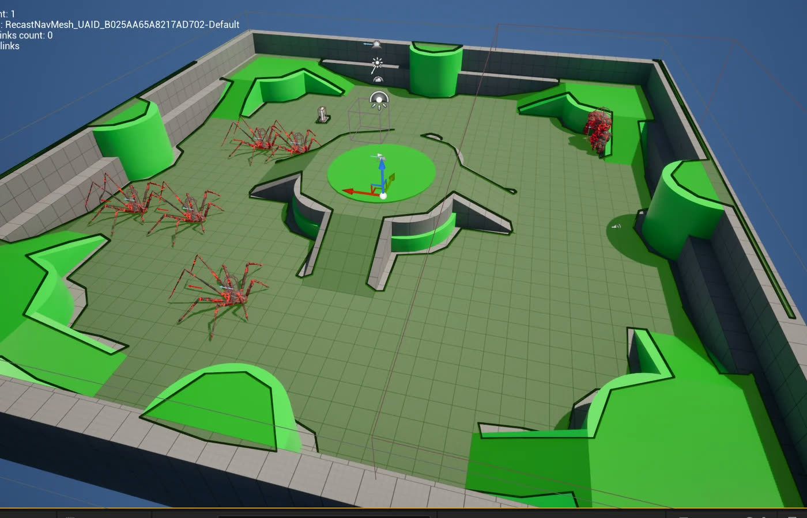
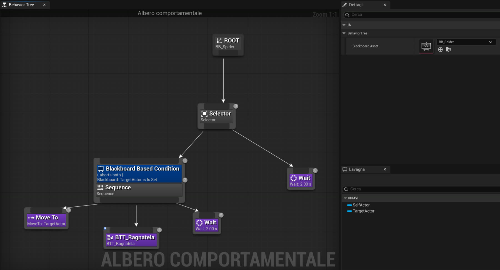
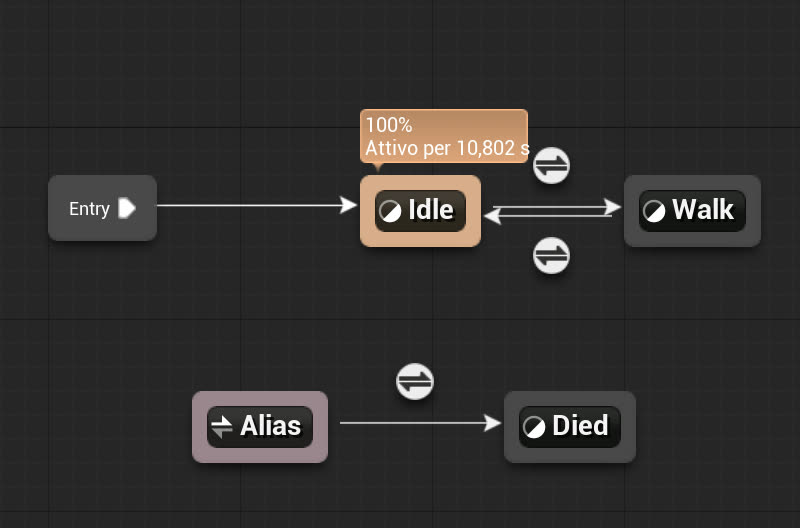
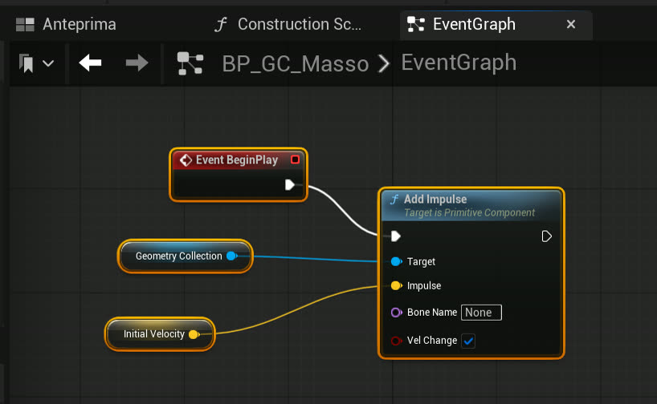
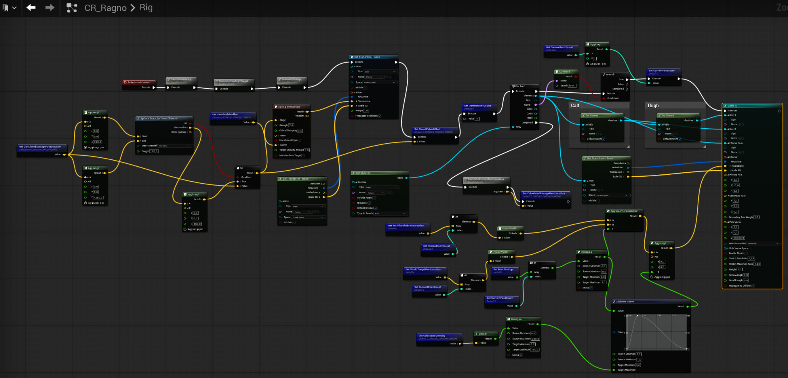
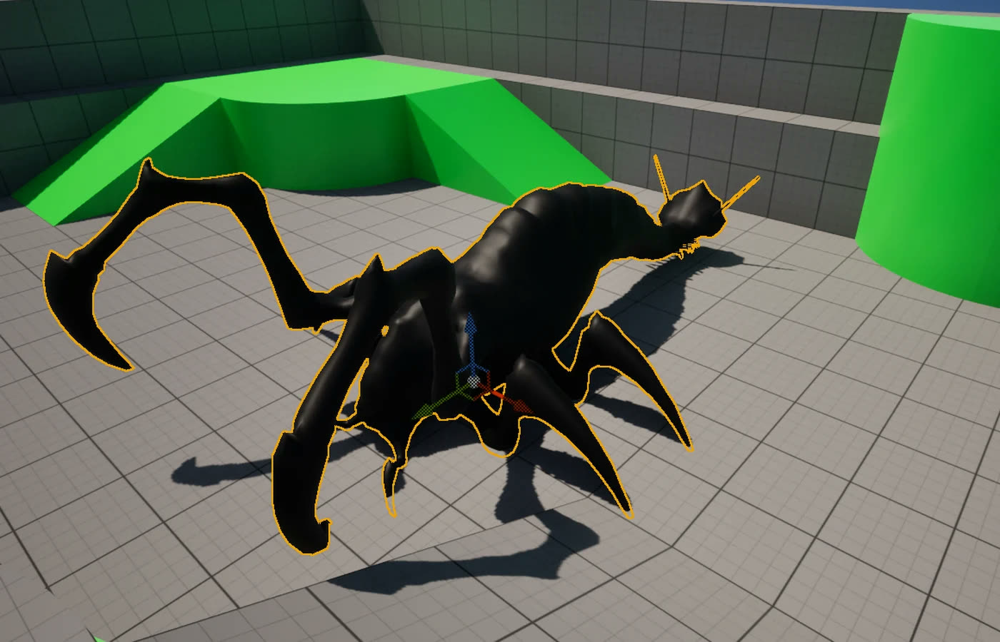

University project · team of 3 · 2026
Ashen Sea
A souls-like action adventure in Unreal Engine 5.6, made by a team of three for the Advanced Video Game Programming exam. The demo is a 10–20 minute vertical slice. I was responsible for the enemies: movement, animation and AI.
- Role
- Enemies and AI in Blueprints. The enemy 3D models come from Fab and Sketchfab
- Team
- 3 people: player character and combat, level design and UI, enemies and AI (me)
- Period
- March–May 2026
- Tools
- Unreal Engine 5.6, Blueprints, Control Rig, Behavior Tree, AI Perception, Geometry Collection
The spider: a procedural walk
Legs that really touch the ground
The spider has no walk animations. A Control Rig computes the next foothold for each leg, interpolates the position halfway through the step to avoid snapping and applies IK: legs never go through objects, even on uneven ground, and the body bobs like a real animal's.

An arena to test it
I tested walking and navigation in an arena with obstacles, ramps and height changes before bringing the spider into the game map.

Behaviour in a Behavior Tree
AI Perception tells the spider whether it can see the player. If it can, it moves closer; within range it stops, shoots a web, waits 2 seconds and starts again if the player is still visible.
Death and ash
A defeated enemy stays on the ground until the player collects its ash into the hourglass, and the body dissolves during collection. I built the collection logic; the ash dissolve material itself isn't my work.
The golem: the demo's boss

Animation and states
The golem uses Mixamo animations driven by an Animation Blueprint: a state machine with Idle, Walk and Died, and a Blend Space for a seamless change from standing to walking. Death uses ragdoll physics instead of an animation.

Punch or boulder
Every 4 seconds the golem checks its distance to the player: if close enough it throws a punch, left or right at random, otherwise it creates a boulder between its hands and throws it. On impact the boulder is replaced by a Geometry Collection and shatters. The golem roars the first time it engages.
The spider's logic
The Behavior Tree loop, with the attack range set in the AI Perception component.
Challenges and what I learned
- Mixamo animations lack the Root bone Unreal expects: no root motion, and retargeting between different skeletons was not possible. I handled the golem's movement in Blueprints.
- Large Blueprints are hard to read. In the spider's Control Rig I split the logic into functions: speed, new foothold, step midpoint, walk timing.
- I learned Unreal from scratch during the project: I can now work with Behavior Trees, Control Rig and Animation Blueprints.
Ashen Sea is built entirely in Blueprints, so I show the graphs instead of code. I can open the project during an interview.
Gallery



